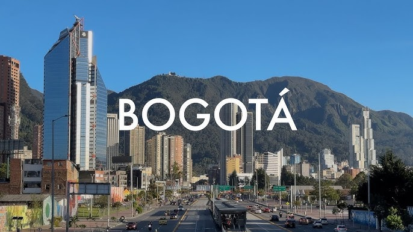
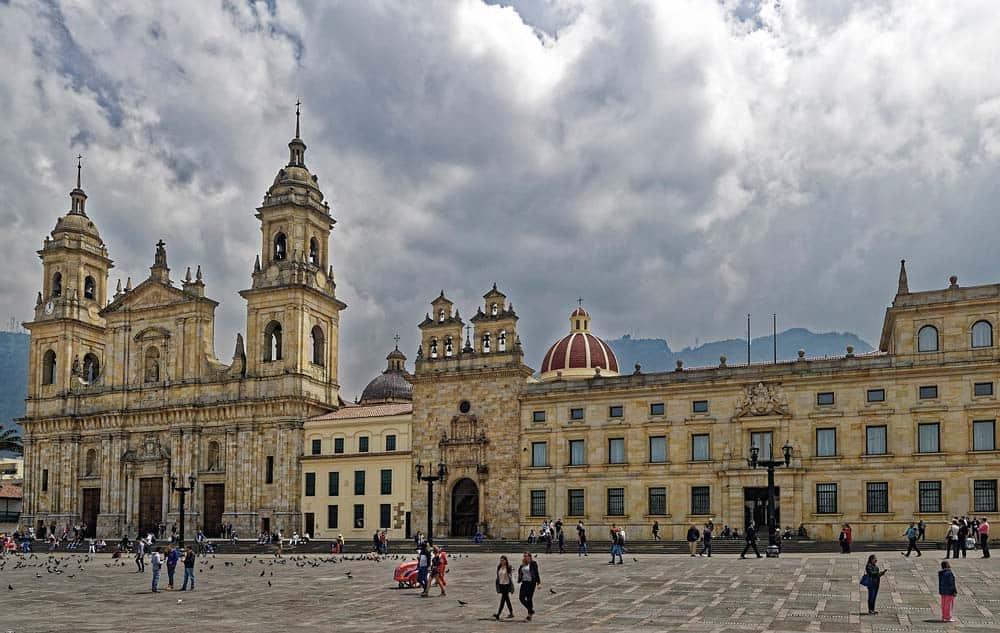
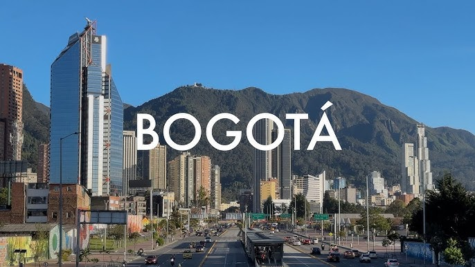
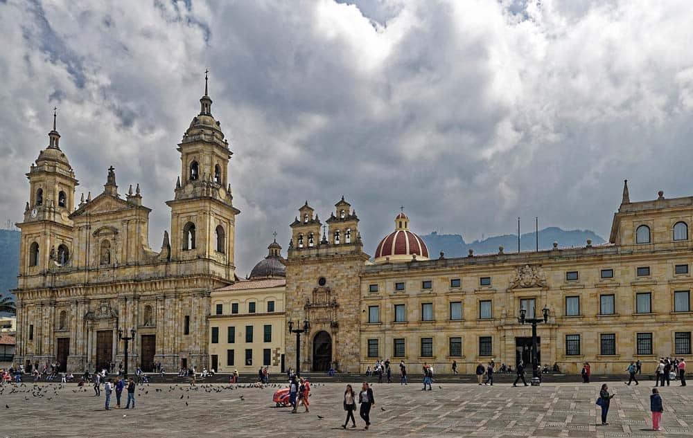

Historia de Cali
Bogotá, la capital de Colombia, fue fundada el 6 de agosto de 1538 por el conquistador español Gonzalo Jiménez de Quesada bajo el nombre de Santa Fé de Bogotá. Inicialmente, fue establecida como un importante centro administrativo y comercial en el Virreinato del Nuevo Reino de Granada. A lo largo del período colonial, Bogotá se consolidó como un centro clave para el comercio y la cultura en la región.
Durante el proceso de independencia de Colombia en el siglo XIX, Bogotá desempeñó un papel crucial, convirtiéndose en la capital de la nueva república tras la independencia del dominio español en 1810. En los siglos XIX y XX, la ciudad experimentó un rápido crecimiento y modernización, convirtiéndose en el centro político, económico y cultural del país.
Hoy en día, Bogotá es una ciudad vibrante y cosmopolita, con una rica herencia histórica y una dinámica vida cultural, consolidándose como el corazón de Colombia.